Music has changed quite a bit throughout history.
Using a mapping similar to that of a piano roll, this visualization reduces an entire piece to an aggregate shape.
In this representation, larger patterns within a piece become clear, and pieces can be more easily compared with one another.
The voices played by the right hand are tinted green, and those played by the left are tinted blue. Each note is represented as a semi-transparent line that has length corresponding to its duration.
Areas that appear more opaque have more lines on top of each other, implying a greater density of notes in the music.
It is interesting to see how from the Baroque to Impressionist periods music has gradually become "messier," with an increased mixing of voices, followed by an abrupt change in the 20th century with the clear-cut, gestural patterns of minimalism.
Scroll through to see how music has developed, and click on an image to listen to the corresponding piece!
1702 - J.S. Bach: Prelude and Fugue No. 1
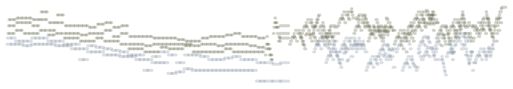1720 - J.S. Bach: Invention No. 8
1722 - J.S. Bach: French Suite No. 5, Allemande
1788 - W.A. Mozart: Sonata K. 545, Allegro
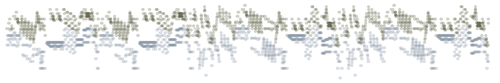1801 - L.V. Beethoven: Sonata Op. 27 No. 2 "Moonlight", Adagio sostenuto
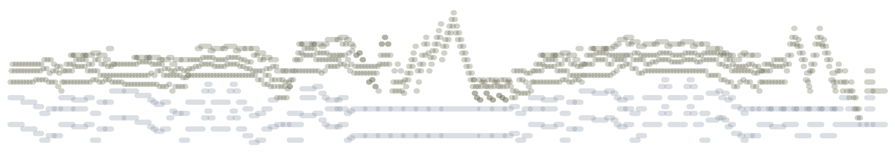1804 - L.V. Beethoven: Sonata Op. 53 "Waldstein", Allegro con brio
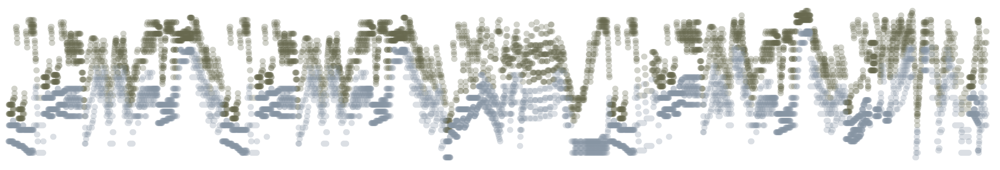1855 - F. Chopin: Fantasie-Impromptu Op. Posth. 66
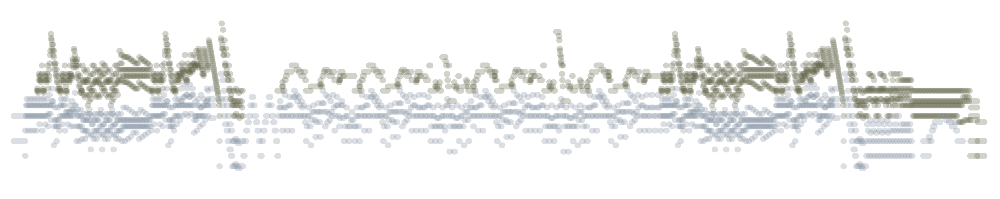1893 - J. Brahms: Intermezzo Op. 118 No. 2
1894 - A. Scriabin: Etude Op. 8 No. 12
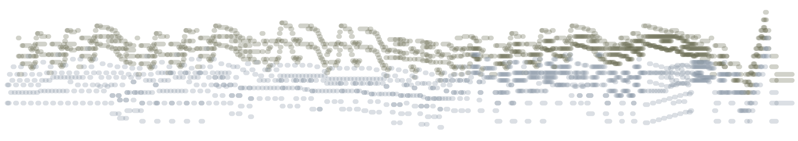1895 - C. Debussy: Arabesque L. 66 No.1
1899 - M. Ravel: Pavane pour une infante defunte
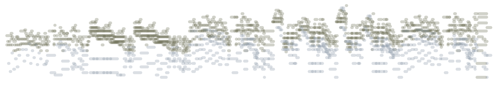1910 - C. Debussy: Prelude L. 117 No. 12 "La Cathedrale Engloutie"
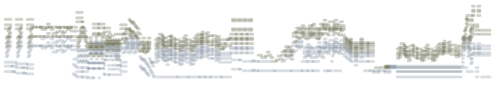1888 - E. Satie: Gymnopedie No. 1
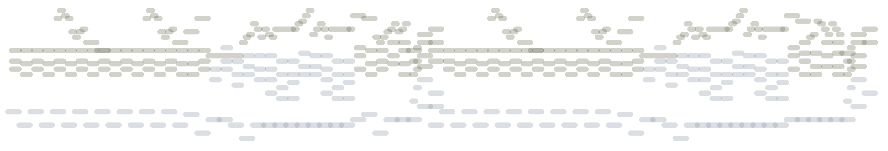1979 - P. Glass: Mad Rush
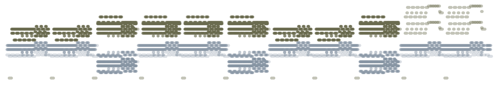1993 - M. Nyman: The Heart Asks Pleasure First
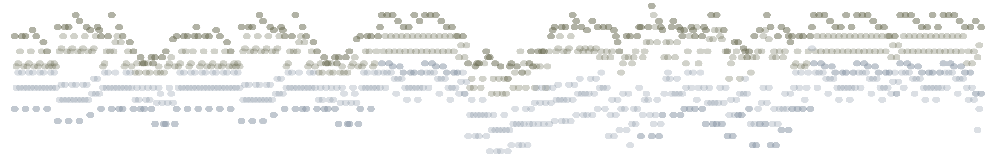